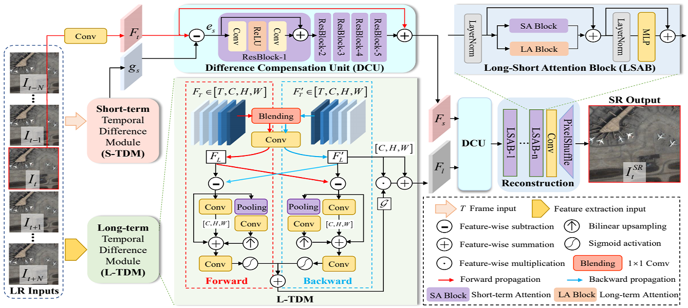
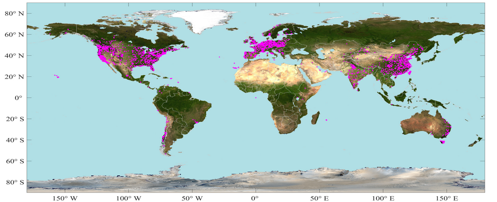
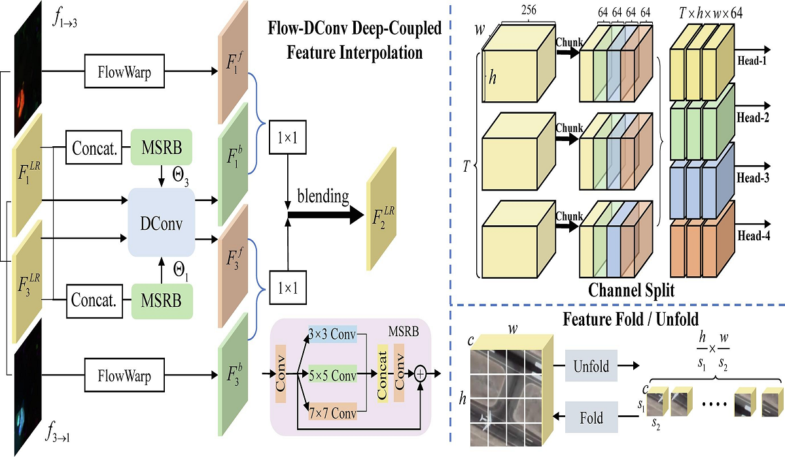
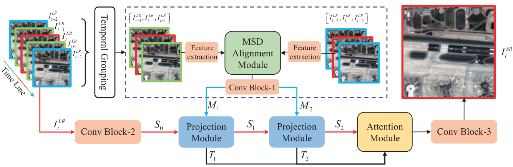
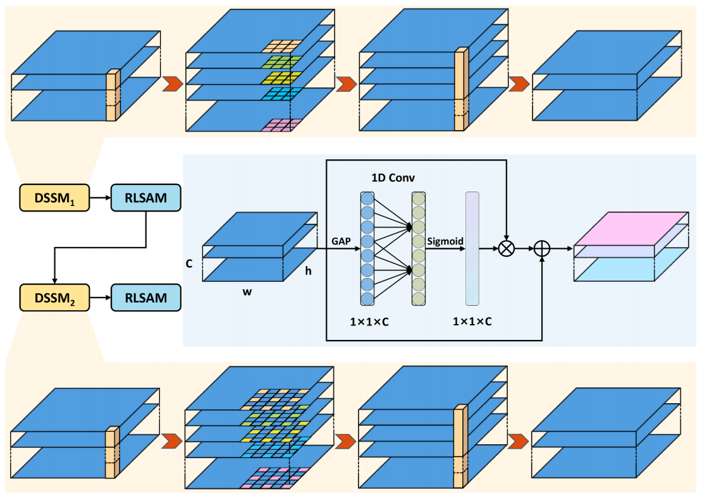
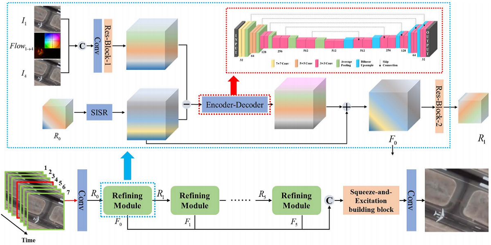

Yi Xiao's Homepage
 |
Yi Xiao (肖屹) |
Biography
Yi Xiao is currently a Ph.D. candidate at Wuhan University, School of Geodesy and Geomatics. He received his bachelor in China University of Geoscience and Huazhong University of Science and Technology. Drawing upon the realms of remote sensing image processing, computer vision, and deep learning.
News
Education
-
Ph.D. in Wuhan University, School of Geodesy and Geomatics
2022.09-2025.06
Supervisor: Prof. Qiangqiang Yuan and Liangpei Zhang
Major: Photogrammetry and Remote Sensing
-
M.S. in Wuhan University, School of Geodesy and Geomatics
2020.09-2022.06
Supervisor: Prof. Qiangqiang Yuan and Liangpei Zhang
Major: Resource and Environment
-
B.E. in Huazhong University of Science and Technology, School of Computer Science and Technology
2018.09-2020.06
Major: Computer Science and Technology (Dual Degree)
-
B.S. in China University of Geoscience (Wuhan), School of Mathematics and Physics
2016.09-2020.06
Major: Mathematics and Applied Mathematics (Major Degree)
Publications
|  |
Local-Global Temporal Difference Learning for Satellite Video Super-Resolution |
|  | |
|  | |
|  | |
|  | |
 |
|
 |
Learning an Intrinsic Graph Neural Network for Satellite Video Super-Resolution |
|  | A Recurrent Refinement Network for Satellite Video Super-Resolution |
Awards and Honors
- 2022, Outstanding Graduate Student of WHU.
Services
Peer Review:
IEEE Transactions on Geoscience and Remote Sensing (TGRS)